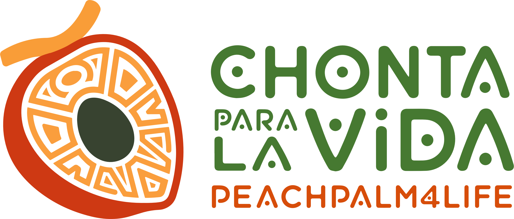
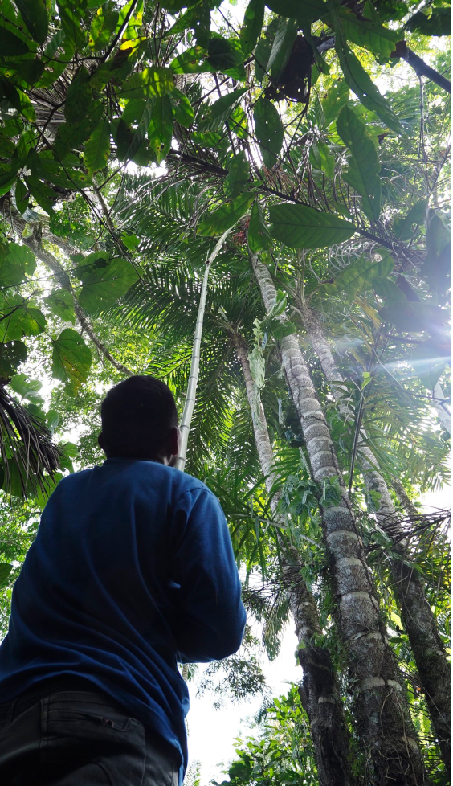
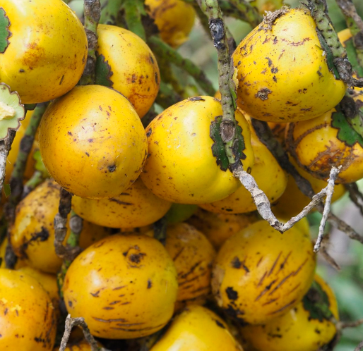
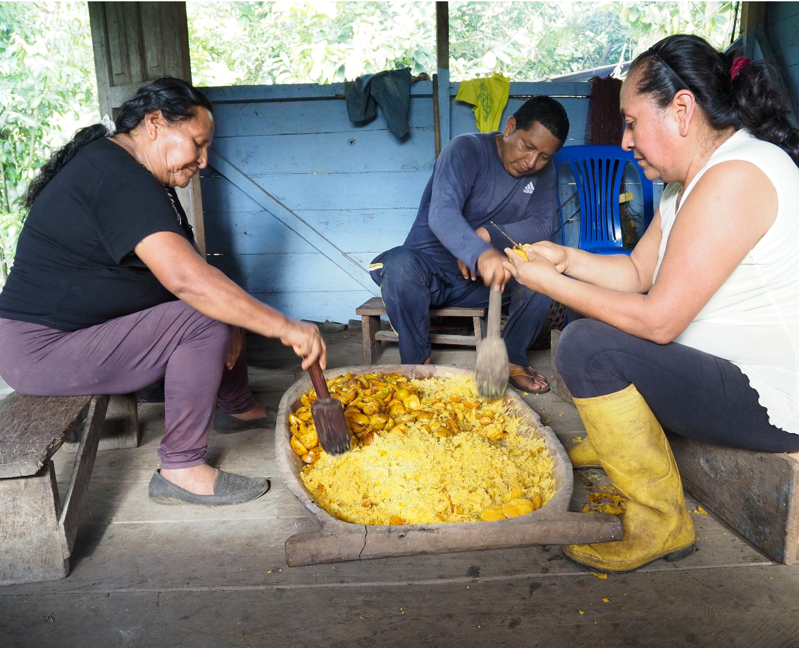
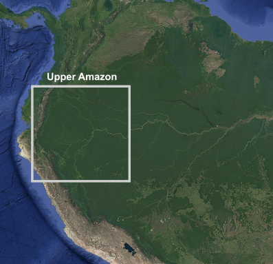
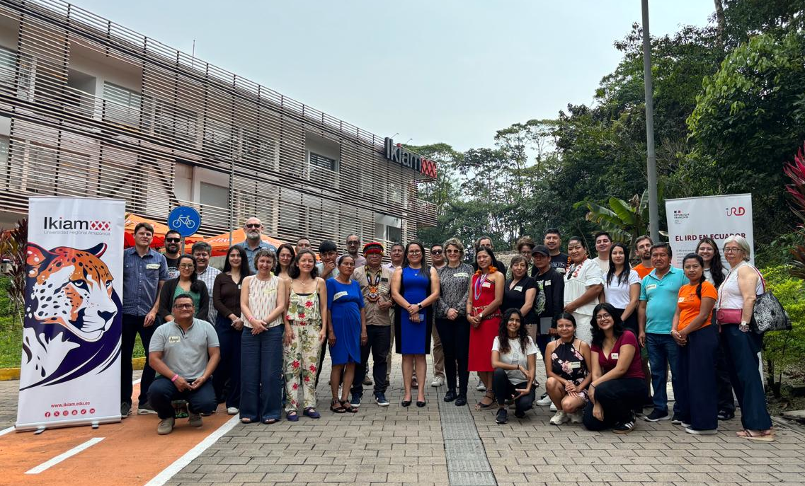

Funding: ANR PRC (AAPG2025) — H.01: Science de la durabilité
Co-PIs: Irene Teixidor-Toneu (IRD-IMBE) & Thomas L.P. Couvreur (IRD-DIADE)
Duration: 60 months · 2026-2023

PeachPalm4LIFE is a transdisciplinary research project focused on the peach palm, Bactris gasipaes var. gasipaes — the only truly domesticated palm of the Amazon and a cornerstone of Indigenous agroforestry systems. Despite its cultural, nutritional, and economic importance, peach palm cultivation is increasingly being abandoned, and its remarkable diversity remains poorly understood and undervalued.
The project integrates Indigenous knowledge, agroecological practices, and genomic science to unlock the full potential of peach palm for sustainable development in the Upper Amazon — contributing to food security, biodiversity conservation, and climate resilience, while upholding the cultural values and governance of Indigenous peoples.



PeachPalm4LIFE has four specific objectives:
Coordination, communication, and open science across all partners and WPs.
Participatory workshops with three Ecuadorian Indigenous nationalities (Kichwa, Sápara, Shuar) to co-identify challenges and co-design sustainability indicators.
Regional survey (60 communities, Upper Amazon) integrating cultural, phenotypic, and genomic data to map drivers of peach palm diversity.
Local-scale study in Ecuador on the genetic basis of fruit color, pollination ecology, and Indigenous knowledge systems sustaining fruit diversity.
Co-development of technical innovations (FabLab), policy briefs, educational materials, and Theatre Forum engagements with communities and the public.
The project operates at two scales: a local scale in Ecuador (WP1, WP3, WP4) working with three Indigenous nationalities, and a sub-regional scale across the Upper Amazon — southern Colombia, Ecuador, and northern Peru (WP2).


Publications will appear here as the project progresses.